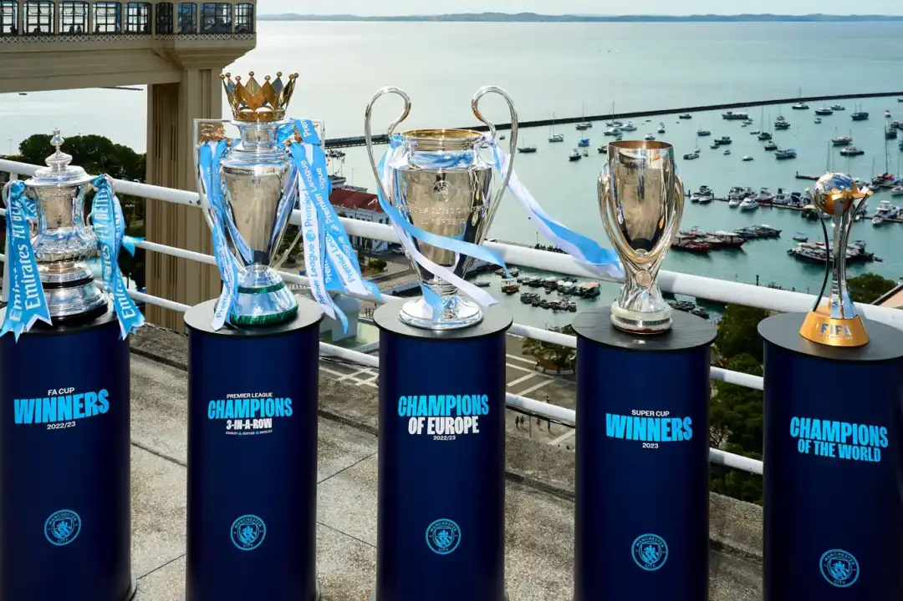
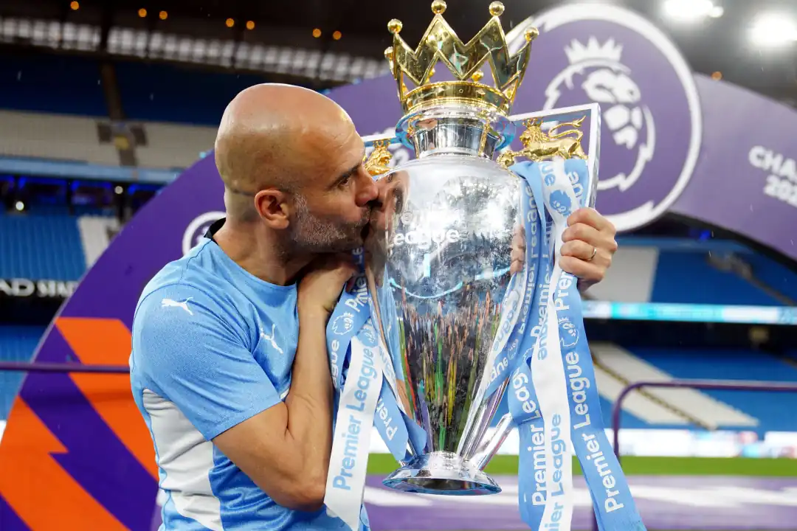
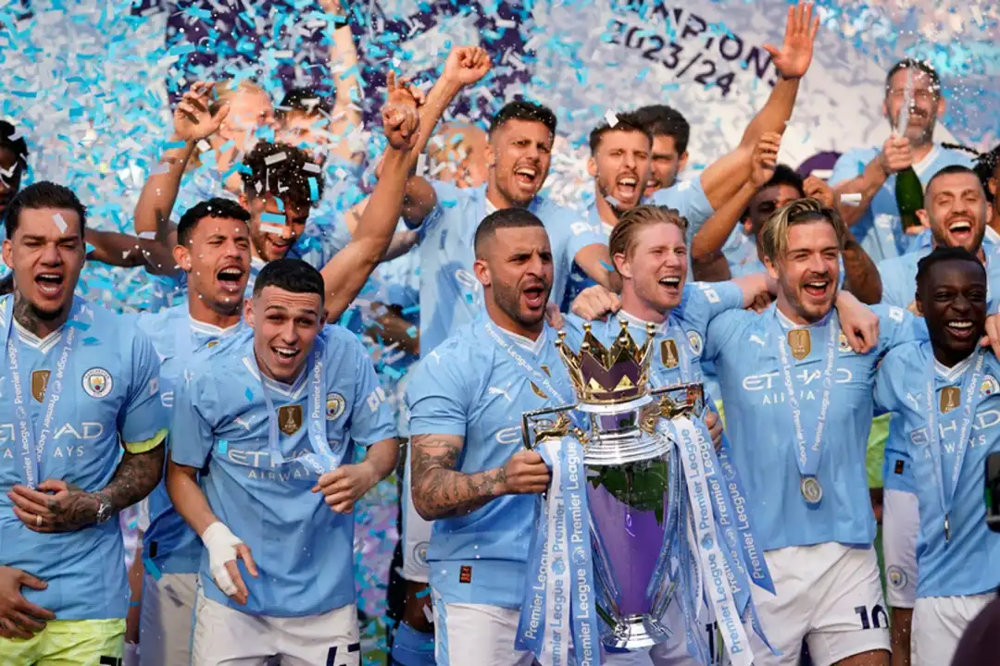

Achievements






Manchester City Football Club is a professional football club based in Manchester, England, that competes in the Premier League, the top flight of English football. Founded in 1880 as St. Mark's (West Gorton), they became Ardwick Association Football Club in 1887 and Manchester City in 1894.